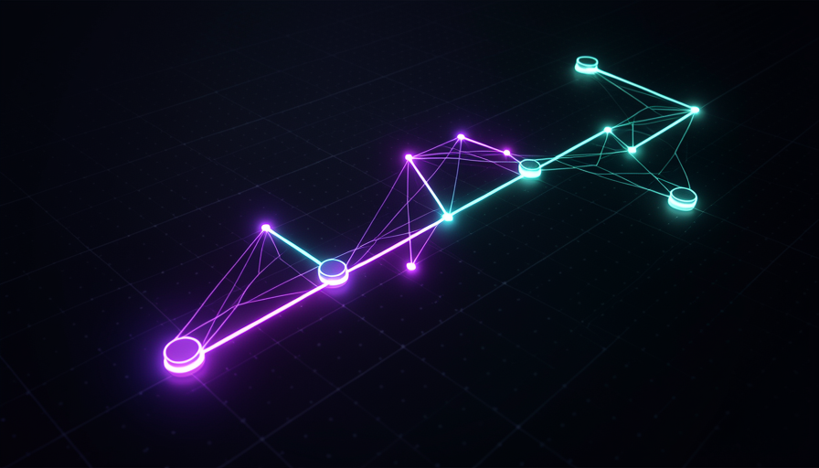
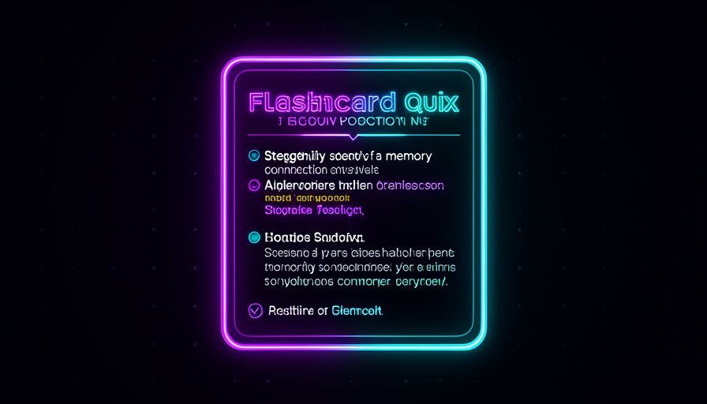
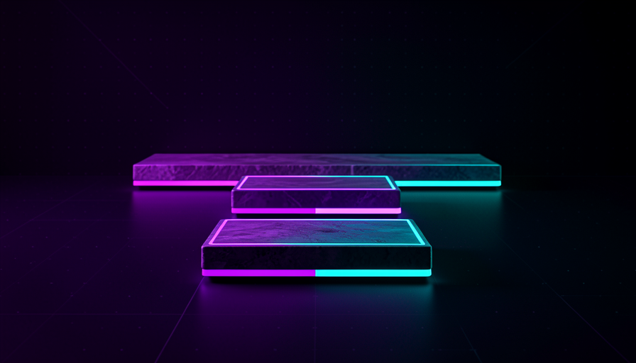

📖 Glossário vivo (leia antes — volte sempre que precisar)
Estes são os termos novos deste módulo (a base — modelo, agente, skill, contexto — você já viu nas Trilhas 1 e 3). Fixe estes antes de seguir:
🎯 Zona de desenvolvimento proximal
🧠 Imagine assim: um videogame bem feito. Se a fase é fácil demais, você boceja e larga. Se é impossível, você quebra o controle. O jogo prende quando cada fase é só um degrau acima do que você já domina — desafiador, mas alcançável com um pouco de esforço. Esse degrau é exatamente onde você cresce.
A primeira coisa que a Teach skill tem "encodada" (embutida nas instruções) é um conceito clássico da pedagogia: a zona de desenvolvimento proximal (ZDP). A ideia, vinda do psicólogo Vygotsky, divide qualquer assunto em três faixas: o que você já consegue sozinho, o que você consegue com ajuda (a ZDP), e o que está longe demais por enquanto. Ensinar bem significa mirar a faixa do meio — nem repetir o óbvio, nem despejar algo que você ainda não tem base pra segurar.
Por que isso importa pra uma skill de IA? Porque o erro padrão de um agente sem essa instrução é jogar um data dump: ele cospe tudo o que sabe sobre o tópico de uma vez. Você lê, acha lindo, e esquece em 10 minutos — nada ficou na ZDP, só passou por cima. Pocock resume o objetivo: "teaching is not getting info into your head but orienting you in the world" — ensinar não é enfiar informação na sua cabeça, é te orientar no mundo. A skill, por isso, primeiro descobre onde você está (seu ponto de partida) pra calibrar o próximo passo dentro da sua ZDP. Erro comum: achar que "aula boa = aula completa". Aula boa é aula no degrau certo; completude vira ruído quando passa da sua zona.
A ZDP é o anel que brilha: nem o miolo (já sei), nem a borda (longe demais).

⚠️ Erro comum de iniciante
Pedir "me explica tudo sobre X" e receber um muro de texto. Sem mirar a ZDP, a IA entrega volume — não aprendizado. O certo é a skill perguntar onde você está antes de ensinar.
Em 1 frase: aprende-se no degrau seguinte — nem no que você já sabe, nem no que está longe demais.
Indo mais fundo (opcional): de onde vem a "ZDP"?
O termo é do psicólogo soviético Lev Vygotsky (anos 1930). Ele observou que crianças resolvem com a ajuda de um adulto problemas que ainda não resolvem sozinhas — e que é justamente nessa faixa "assistida" que o aprendizado se consolida. Décadas depois, isso virou a base do conceito de scaffolding (andaime): dar suporte só o suficiente, e ir retirando conforme a pessoa cresce. A Teach skill é, no fundo, um andaime automático.
🌐 Conhecimento como grafo
🧠 Imagine assim: uma floresta vista de cima. As árvores são os conceitos; as trilhas que ligam uma à outra são as dependências ("pra chegar nesta clareira, passe primeiro por aquela"). Não dá pra "ler uma floresta da esquerda pra direita" como se fosse uma lista — ela tem ramos, atalhos e becos.
Pocock descreve o conhecimento explicitamente como um grafo — ou uma floresta. Um grafo é só isso: nós (cada conceito) ligados por arestas (cada relação "pra entender A, você precisa de B"). Aprender Git, por exemplo: "commit" depende de entender "arquivo" e "mudança"; "branch" depende de "commit"; "merge" depende de "branch". Não é uma fila reta — é uma rede onde tudo se apoia em algo antes.
Por que essa visão é poderosa? Porque ela explica por que tantas explicações falham: elas tentam te ensinar um nó sem você ter os nós-pais. É como ler o capítulo 7 sem ter lido o 1 ao 6 — as palavras passam, mas não grudam, porque não têm onde se ancorar. O grafo também mostra que existem muitos caminhos possíveis para o mesmo destino, e que alguns são becos sem saída pra você (dependem de coisas que você ainda não tem). Erro comum: tratar um assunto como "lista de tópicos" e estudar fora de ordem. Sem respeitar as arestas do grafo, você fica pulando entre nós soltos e nada conecta.

Em 1 frase: conhecimento é uma floresta de conceitos ligados, não uma lista — cada nó se apoia nos anteriores.
🛤️ Caminho linear no grafo
🧠 Imagine assim: um guia de trilha numa floresta enorme. A floresta tem mil caminhos, mas o guia te leva por uma rota: clareira por clareira, na ordem que faz sentido, sem você se perder. Você não precisa enxergar a floresta inteira — só o próximo passo, e o guia que conhece o mapa.
Aqui está o pulo do gato da Teach skill. O conhecimento é um grafo (tópico 2), mas você não consegue aprender um grafo — sua atenção é linear, um conceito de cada vez. Então a skill faz a tradução: ela traça um caminho linear pelo grafo. Nas palavras de Pocock: a skill enxerga o conhecimento como floresta e "cria um caminho linear pelo grafo". Ela escolhe qual aresta seguir agora, respeitando suas dependências e sua ZDP — e adia o resto.
Na demo do vídeo, ela faz isso para um vibe coder que quer preencher lacunas: o caminho começa por git (o "botão de desfazer"), depois ler mensagens de erro, depois debugging, depois como software é entregue, depois testes — uma ordem deliberada, cada passo apoiado no anterior. A skill também mantém o learning record para lembrar onde você está no caminho, e manda você ler a fonte primária (no caso de git, o livro Pro Git) em vez de só confiar no resumo dela. Erro comum: querer "ver o mapa inteiro" antes de começar. O caminho linear existe justamente pra você não travar na vastidão do grafo — confie no próximo passo.
Mesmo grafo do tópico 2, agora com o caminho linear aceso (a rota do vibe coder na demo).
🔬 Exemplo resolvido: a Teach skill desenhando seu caminho
Você instala a skill (npx skills latest add → escolhe "teach") e diz a missão, não o assunto: "quero entregar software melhor; tenho um app em Next.js que mexo no vibe-coding mas quebro coisas e não sei desfazer." Veja o que a skill faz, em ordem:
- Alinha a missão — pergunta o que você constrói, o que "software melhor" significa pra você, qual projeto concreto. Cria o MISSION.md.
- Localiza no grafo — vê que seu nó-meta ("não quebrar / saber desfazer") depende de git, e que git é seu ponto de partida.
- Traça o caminho linear — git → ler erros → debugging → deploy → testes. Adia tudo o que não está na sua ZDP agora.
- Personaliza — checa sua máquina (git instalado?), gera um cheat sheet + a 1ª lição em HTML (abre no browser, mais rico que o terminal), com exercícios reais no terminal.
- Aponta a fonte primária — manda ler o livro Pro Git e convida você a perguntar e pedir a próxima lição.
Resultado: você não recebe "um curso de git". Você recebe o seu caminho dentro do grafo de git — calibrado pela sua missão.
Em 1 frase: a skill transforma a floresta (grafo) numa trilha (caminho linear) que você consegue de fato caminhar.
🧠 Quizzes e recall
🧠 Imagine assim: ler um mapa cem vezes não te faz lembrar do caminho. Mas tentar percorrer o caminho de olhos fechados uma vez — e errar, e corrigir — grava a rota. Releitura é reconhecer; tentar lembrar é gravar.
Esta é a peça que mais separa a Teach skill de um "resumo bonito". Ela usa quizzes de propósito — e Pocock é categórico: "quizzes are unreasonably effective" (quizzes são absurdamente eficazes). O motivo tem nome na ciência da aprendizagem: recall (recuperação ativa). Toda vez que você puxa uma resposta da cabeça em vez de só reler, você fortalece a trilha neural daquele conhecimento.
O efeito técnico: o quiz aumenta a storage strength (força de armazenamento) — exatamente o que Pocock diz que a skill busca: "usa quizzes pra aumentar a força de armazenamento". Reler dá uma ilusão de domínio (você reconhece o texto e acha que sabe), mas reconhecer ≠ recuperar. Por isso as lições da skill vêm com exercícios reais no terminal, não só perguntas de múltipla escolha: o exercício é o recall mais forte que existe — você produz a resposta, no ambiente real. Erro comum: "estudar" relendo. Reler é confortável e quase inútil para retenção; o desconforto de tentar lembrar é justamente o sinal de que está funcionando.
Recuperação rápida: por que a Teach skill prefere quizzes a só reler?
Em 1 frase: puxar a resposta da memória (recall) grava; reler só reconhece — por isso os quizzes.
⏳ Spaced repetition
🧠 Imagine assim: regar uma planta. Um balde de água de uma vez afoga a raiz e escorre. Um pouco de água em intervalos certos faz a planta crescer forte. Memória é igual: gotas espaçadas batem revisão de uma vez só.
Quizzes fixam (tópico 4), mas a memória vaza com o tempo — é a "curva do esquecimento". O antídoto é a spaced repetition (repetição espaçada): revisar o mesmo conceito de novo logo antes de você esquecê-lo, em intervalos que vão crescendo (1 dia, 3 dias, 1 semana, 1 mês). Cada revisão bem-sucedida estica o intervalo seguinte. É o oposto de "virar a noite estudando": o cramming enche a cabeça por horas e esvazia em dias.
Onde isso entra na Teach skill? É aqui que o fato de ela ser uma skill stateful (vimos em 3.3) faz diferença. Como ela mantém o learning record, ela sabe o que você já viu e quando — então pode te trazer de volta a conceitos antigos no momento certo, em vez de só empurrar conteúdo novo. A própria estrutura "termine a lição, peça a próxima, revisite a fonte primária" embute revisão espaçada na rotina. Erro comum: aprender uma vez e nunca voltar. Sem espaçamento, até um recall forte some — a retenção real exige revisitar, não só visitar.

Em 1 frase: revisar em intervalos crescentes (gotas, não baldes) vence a curva do esquecimento.
🎚️ Personalização
🧠 Imagine assim: um professor particular que já conhece sua mesa, suas ferramentas e seu objetivo — e por isso nunca te ensina o que você já sabe nem o que não te serve. É o oposto de uma apostila genérica, igual pra todo mundo.
Tudo o que vimos — ZDP, grafo, caminho linear, recall, spaced repetition — só funciona porque a skill conhece você. Ela parte da sua missão ("talking to a teacher; the agent is my teacher", diz Pocock), checa o setup da sua máquina (git instalado? qual projeto?), e guarda tudo no learning record. Por isso a 1ª lição já vem calibrada: o cheat sheet é do seu caso, os exercícios rodam no seu terminal.
É essa soma — princípios de aprendizagem reais + estado pessoal — que faz Pocock chamar a Teach skill de "extremely effective" e contar que aprendeu cubo mágico com ela e resolve de memória. A lição maior pra você que constrói skills: ensino que retém não é "explicar bem"; é orquestrar (mirar a ZDP, percorrer o grafo em linha, forçar recall, espaçar a revisão) em cima de quem a pessoa é. Erro comum: pedir "me ensina X" em geral. Diga a missão e o ponto de partida — é o que liga a personalização. Use o prompt abaixo como ponto de partida:
# Acione a teach skill pela MISSÃO, não pelo assunto. # (instalar antes: npx skills latest add → escolher "teach") Use a teach skill comigo. Minha missão: quero entregar software melhor — tenho um app em Next.js que eu mexo no vibe-coding, mas quebro coisas e não sei desfazer com segurança. Antes de ensinar: 1. Descubra meu ponto de partida (o que eu já sei / não sei). 2. Trace um caminho linear pelo grafo, respeitando a ZDP. 3. Cada lição: HTML no browser + exercício real no terminal. 4. Use quizzes pra fixar (recall) e me lembre de revisar o que vimos antes (spaced repetition). 5. Aponte a fonte primária e salve no learning record.
Recuperação rápida: ao acionar a Teach skill, você deve falar de quê primeiro?
Em 1 frase: ensino que retém é orquestração (ZDP + grafo + recall + espaçamento) em cima de quem você é.
🧾 Resumo do Módulo
Próximo módulo:
3.5 — Grill-me & skills adversariais: a skill que te entrevista e alinha o entendimento antes de codar.